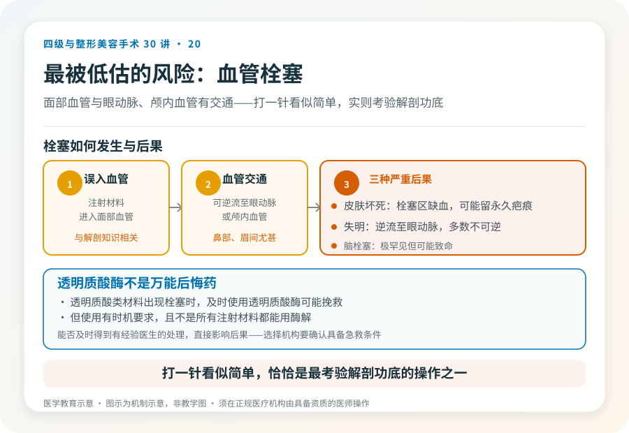
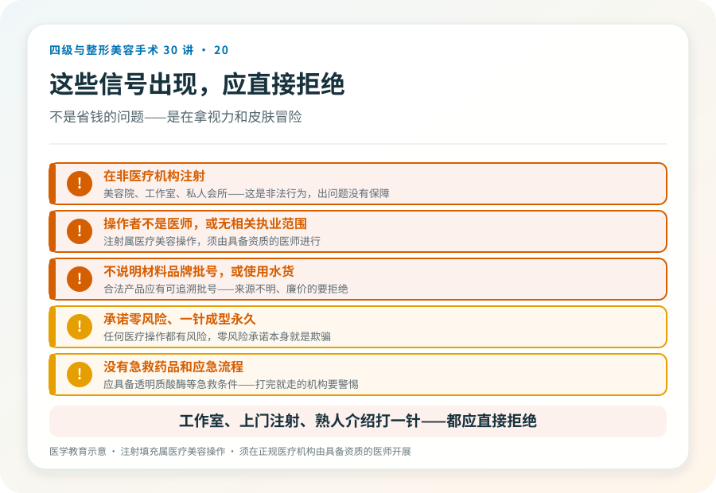

先说结论：非手术鼻整形（透明质酸等注射填充）创伤小、可逆，但效果临时、改善幅度有限，且面部注射有血管栓塞、皮肤坏死甚至失明等严重风险。它适合微小调整或试水效果，不适合结构性改变（如明显垫高、鼻尖重塑）。把它当成“无风险小项目”是危险认知，注射的并发症虽少见，但一旦发生在面部血管，后果可能很重。
它适合什么、不适合什么
适合：
- 鼻梁轻度低平，希望小幅改善。
- 鼻部轻微不对称或凹陷的临时修饰。
- 想先看效果、再决定是否做手术的“试水”。
不适合：
- 明显的鼻梁低、鼻尖形态差，注射解决不了结构性问题。
- 鼻修复、复杂基础，需要手术。
- 对永久效果有期待，注射是临时的。
- 把它当成“无风险替代手术”的人。
真正需要正视的风险，血管栓塞
这是非手术鼻整形最被低估的风险。面部血管丰富，且与眼动脉、颅内血管有交通。注射材料如果误入血管：
- 皮肤坏死：栓塞区域皮肤缺血坏死，可能留下永久疤痕。
- 失明：鼻部、眉间注射误入血管交通，可逆流至眼动脉，导致失明，且多数不可逆。这是注射美容最严重的并发症之一。
- 脑栓塞：极罕见但可能致命。
这些风险与操作者的解剖知识、注射层次、材料选择和应急处理能力直接相关。“打一针”看似简单，恰恰是最考验解剖功底的操作之一。
其他风险
- 感染。
- 过敏反应。
- 丁达尔效应（透光）、形态不佳、移位。
- 结节、肉芽肿（见第 50 篇皮肤系列关于注射结节的讨论）。
- 效果不持久：透明质酸通常维持数月到一年，需要反复注射。
- 不对称、过度填充：反复注射可能致鼻宽、形态不自然（“阿凡达鼻”）。
透明质酸酶不是万能后悔药
透明质酸类材料在出现血管栓塞时，及时使用透明质酸酶可能挽救，但它的使用有时机要求，且不是所有注射材料都能用酶解（见第 27、50 篇）。这意味着一旦出问题，能否及时得到有经验医生的处理，直接影响后果。所以在选择注射时，要确认机构和医生具备并发症处理能力，而不是“打完就走”。
常见的危险信号
- 在非医疗机构（美容院、工作室、私人会所）注射，这是非法行为，出了问题没有保障。
- 操作者不是医师，或医师无相关执业范围。
- 不说明材料品牌、批号，或使用来源不明、廉价的“水货”。
- 承诺“零风险”“一针成型永久”。
- 没有急救药品（如透明质酸酶）和应急流程。
为什么把它放在四级手术系列里讲
虽然注射不属四级手术，但它在鼻整形决策中常作为“低门槛入口”出现，很多人从注射开始，最终走向手术或修复。理解它的风险边界，是整体鼻整形决策的一部分。尤其要避免的，是在不具备手术条件或资质的地方，被引导做高风险注射，再因失败进入反复修复循环。
决策前的硬要求
如果考虑注射鼻整形，至少做到：在正规医疗机构、由具备资质的医师操作；确认材料为合法产品、有可追溯批号；操作前讨论风险和应急；确认机构具备透明质酸酶等急救条件。任何“工作室”“上门注射”“熟人介绍打一针”都应直接拒绝，这不是省钱，是在拿视力和皮肤冒险。
本文用于健康教育，不能替代面诊和个体化评估；注射填充属医疗美容操作，须在正规医疗机构由具备资质的医师开展。